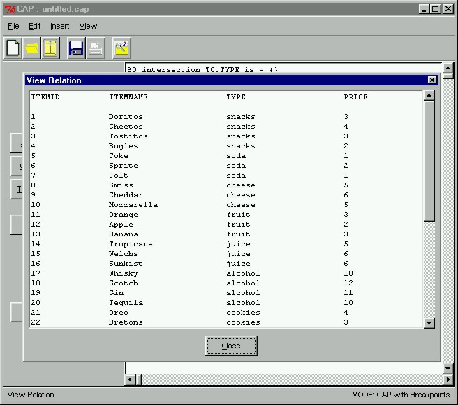

 |
Viewing the RelationThe prototype also allows us to view the contents of our database file. Here, we can see the contents of the dbfile.sql database. For example, item 1, a type of snack, is Doritos and it has a price of $3. The View Relation window is opened by clicking "View...Relation" from the main menu.
|